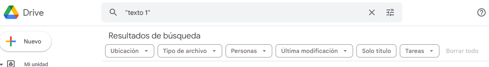
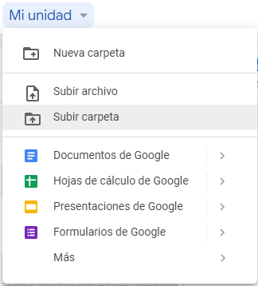
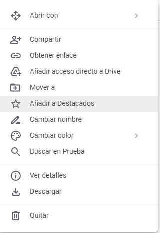
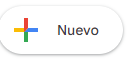
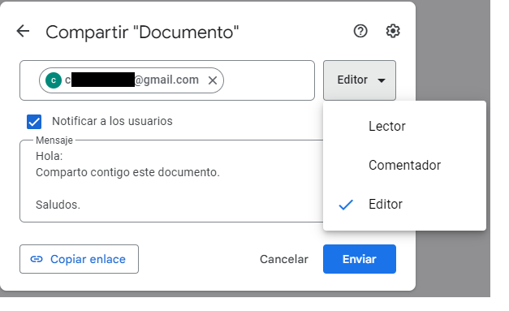
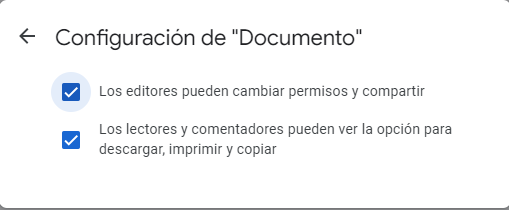
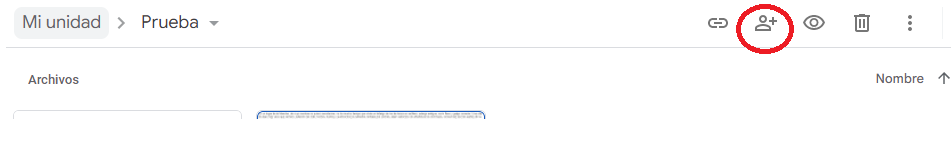

Drive es un servicio de almacenamiento en la nube que nos permite gestionar y compartir contenido fácilmente. Podremos acceder a la información que almacenemos en la nube de forma rápida y desde cualquier lugar.
Características de Drive
- Barra de búsqueda: nos permite buscar archivos o carpetas en nuestro Drive, ofrece distintos parámetros para configurar y filtrar la búsqueda (por tipo de archivo, ubicación, última modificación...).

- Mi unidad: aquí podemos crear nuevos archivos o carpetas, ya sea subiéndolos desde el pc o creándolos en la nube con cualquiera de las aplicaciones que ofrece Google. Una cuestión importante es tener todos los archivos y carpetas bien organizados, para que luego sea más fácil gestionarlos.

- Reciente: aquí se muestran los últimos elementos a los que hemos accedido.
- Destacados: cuando queramos acceder a determinados archivos o carpetas de manera más rápida los marcaremos como destacados. Para ello, basta con hacer clic con el botón derecho sobre el elemento y luego en Añadir a Destacados.

- Compartidos conmigo: son los archivos que han sido compartidos con nosotros.
- Subir un archivo o carpeta a Drive: pulsamos en Mi unidad y hacemos clic en y luego Subir archivo; o pulsamos con el botón derecho en la parte vacía de la ventana y seleccionamos Subir archivo. Actuaremos de forma similar para subir una carpeta, en este caso, se subirá la carpeta con todo su contenido.
- Compartir un archivo o carpeta: hacemos clic con el botón derecho sobre el elemento y luego Compartir. En el cuadro de diálogo escribiremos la dirección de correo de la persona con la que queremos compartir el elemento y elegiremos un rol para la misma (editor, comentador, lector). También podemos escribir un pequeño mensaje. Luego pulsamos Enviar. A esa persona con la que compartimos le llegará un correo con un enlace al recurso compartido.

Para compartir, también podemos usar el icono correspondiente de la barra de herramientas situada en la parte superior. Al compartir un archivo o carpeta, la persona con la que compartimos recibirá un correo con un enlace al elemento compartido.
